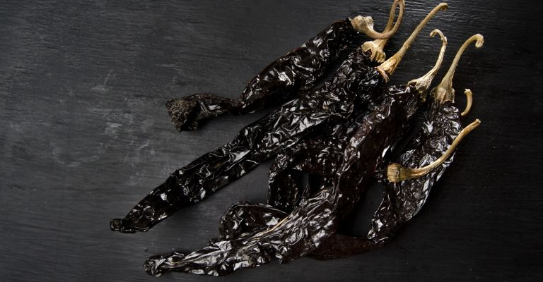

Chile guajillo
3 recetas para preparar con chile guajillo, sácale provecho a este ingrediente mexicano
Te compartimos tres recetas para que puedas preparar en tu casa y aprovechar el chile guajillo{kind=link}
El chile guajillo es un ingrediente característico de la cocina mexicana, solo café rojizo, piel tersa y forma triangular alargada lo identifican del resto de chiles que se ocupan en México. De acuerdo con Larousse Cocina, el chile guajillo es muy utilizado para darle el color rojo y la consistencia a los guisos, moles y salsas, "cuando está fresco se llama chile mirasol", especifica.
El chile guajillo junto con el chile ancho, son los más usado en la gastronomía mexicana para preparar guisos con cerdo, pollo, res u otro tipos de carnes en adobos, moles, salsas picantes, entre otras. "El chile guajillo también se utiliza para sustituir los chiles chilhuacles de Oaxaca. En particular, cuando sustituye al chilhuacle negro, debe tatemarse en el comal hasta que alcance el tono negro, y luego remojarse en agua fría para retirar algo del sabor amargo que adquiere en el quemado", explica Larousse Cocina.
Para aprovechar este chile, hoy te compartimos tres diferentes recetas deliciosas que puedes preparar en casa.
Coliflor rostizada con chile guajillo
Ingredientes:
- 1 cabeza de coliflor cortada en floretes
- 2 cucharadas de aceite de oliva
- Sal al gusto
- 1 cucharaditas de chile guajillo en polvo
- 1 cucharadita de paprika
- ½ cucharadita de ajo en polvo
- ½ cucharadita de cebolla en polvo
- ¼ cucharadita de pimienta cayena
- 1 cebolla cambray finamente picada
- 2 limones verdes o amarillos
Procedimiento:
Primero precalienta el horno a 220°C. Cubre una charola para horno con papel para hornear y reserva.
Mezclamos en un bowl el chile guajillo en polvo con el ajo, la paprika, la cebolla, la pimienta cayena, la sal y la pimienta; agrega el aceite de oliva y mezcla.
Vamos a marinar la coliflor con la mezcla de especias y esparce los floretes sobre la charola para horno asegurándote, que no queden encimadas para que la cocción sea pareja.
Horneamos a 220°C entre 20-30 minutos o hasta que la coliflor tome un color dorado y homogéneo.
Sacamos la coliflor del horno y deja enfriar por cinco minutos, agrega el jugo de limón y espolvorea la cebolla cambray por encima antes de servir.

Enchiladas tapatías
Ingredientes:
- 10 chiles guajillos
- ½ cebolla
- 2 dientes de ajo
- 400 gramos de queso fresco
- 15 tortillas
- Para servir:
- Lechuga
- Cebolla
- Queso fresco
Procedimiento:
Primero limpiamos los chiles y remoja en agua hirviendo durante 15 minutos.
Una vez que queden blandos los chiles, la cebolla y los ajos se van a licuar.
En una olla caliente con un poco de aceite, agrega la salsa de chile guajillo y cocina durante 3 minutos.
Baña las tortillas por la salsa y después fríe las tortillas.
Rellenamos las enchiladas con queso fresco.
Acompañamos la enchilada con lechuga, cebolla y queso al gusto.
Fajitas de puerco en salsa de guajillo
Ingredientes:
- 1 kg de pierna de puerco en bistec
- 4 chiles guajillos, sin semillas y venas
- 1 chile ancho, sin semillas y venas
- 3 dientes de ajo picaditos
- 1 cebolla mediana en rebanadas
- 4 tomates rojos
- 1 pizca pimienta sal comino al gusto u opcional
- 2 cucharadas aceite vegetal u opcional
- 1 o 2 limones
Procedimiento:
Se parten en fajitas los bisteces delgados y se agregan en un bowl junto con el limón, la sal, pimienta, y comino.
Poner en un sartén aceite y cuando esté caliente se agrega la carne junto con un diente de ajo.
Se cocina por 10 minutos. Pasado los diez minutos, se apaga el fuego por un momento para preparar la salsa.
Aparte en otra sartén se agrega los tomates, cebollas, los dientes de ajos en picaditos, para freírlos junto con los chiles anchos y guajillos, una vez suaves se licúan, y se agrega la salsa a la carne se pone a hervir por 30 o 35 minutos a fuego medio hasta que la carne este suave y cocida por completo se apaga el fuego, y se sirve con un arroz al gusto.